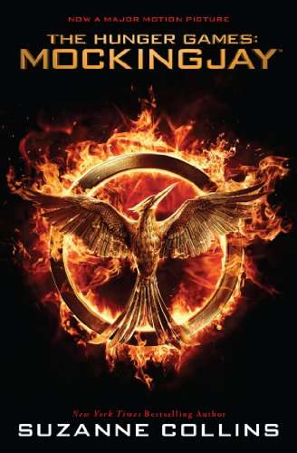

Selected Works
Picture Books
- Year of the Jungle
- "Important and necessary."
- --Kirkus Reviews, STARRED REVIEW
- When Charlie Mcbutton Lost Power
-
"A clever, humorous story in rhyme."
- --School Library Jounal
Sci-Fi
- Mockingjay
-
"...every bit as original and thought provoking, as The Hunger Games. Wow."
- --Los Angeles Times
- Catching Fire
-
“...doesn’t disappoint when it segues into the pulse-pounding action readers have come to expect.”
- --Publishers Weekly, STARRED REVIEW
- The Hunger Games
-
“...a superb tale of physical adventure, political suspense, and romance."
- --Booklist, STARRED REVIEW
Fantasy
- Gregor The Overlander
-
“...readers will likely find [the Underland] to be a fantastically engaging place.”
- --Publishers Weekly, STARRED REVIEW
- Gregor and the Prophecy of Bane
-
“Yessss!”
- --Kirkus Reviews
- Gregor and the Curse of the Warmbloods
-
“...immensely readable installment..."
- --The Horn Book
- Gregor and the Marks of the Secret
-
"...will leave readers gasping..."
- --Kirkus Reviews, STARRED REVIEW
- Gregor and the Code of the Claw
-
"...excellent acquisition for any library."
- --VOYA
Quick Links

Welcome
Hi! Thanks for visiting my website. Here’s a picture of me with a rat in Central Park. If you’ve read my fantasy series, The Underland Chronicles, you will have a clue as to why I chose this photo. If not, you may want to click around and find out a little more about my books. Or visit the Scholastic website for cool games and info!
Fly You High!
|  |
|
| Movie Tie-in edition is now available! |
| Year of the Jungle |
|---|